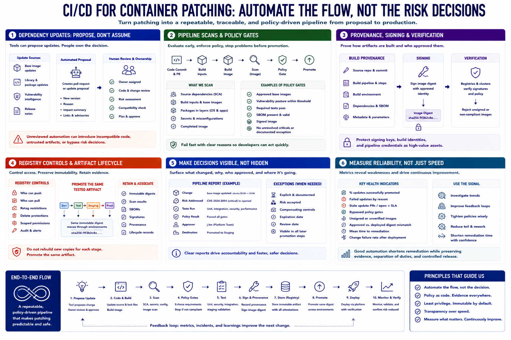

CI/CD and Automation
Connecting to LMS... Progress: in progress

Narration
CI/CD turns patching into a repeatable flow. Dependency-update tools can propose new base images or library versions, but proposals still need ownership, review, and testing. Unreviewed automation can introduce incompatible code, untrusted artifacts, or changes that bypass risk decisions.
Pipeline scans evaluate source dependencies, build inputs, and completed images. Policy gates enforce defined requirements before promotion, such as approved base images, acceptable vulnerability posture, successful tests, required SBOMs, or reviewed exceptions.
Build provenance records how an artifact was created. Signing associates an approved identity with the image digest, while verification helps registries and clusters reject artifacts that do not meet policy. Protect signing keys, build identities, and pipeline credentials as high-value assets.
Registry controls limit who can push, retag, delete, and pull images. Retain immutable digests, scanning results, SBOMs, signatures, and lifecycle records. Promotion should move the same tested artifact through environments instead of rebuilding unrelated copies for each stage.
Automation should surface decisions rather than hide them. Clear reports explain the changed dependency, risk addressed, tests run, policy result, approver, and destination. Exceptions should be explicit, time-limited, and visible to later promotion steps.
Measure pipeline reliability as well as speed. Failed updates, stale pull requests, bypassed gates, unsigned images, and differences between approved and deployed digests reveal process weakness. Good automation shortens remediation while preserving evidence, separation of duties, and controlled release.